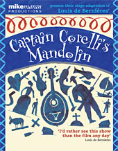

|
|
Past shows:Captain Corelli's MandolinReviewsThis smash-hit adaptation of Louis de Bernières' best-selling novel about love, death and the sweetness of life, set in wartime Cephalonia, is a show that raises fascinating questions about the best way forward for live theatre. On one hand, the show is absolutely modest in scale and style, without any pretence at glossy presentation... it could hardly be less like those huge, glitzy, tightly-drilled and starrily cast spectaculars which modern theatre audiences are supposed to demand. And yet every audience that has ever seen Captain Corelli's Mandolin seems to adore it, from the international crowd at Valvona & Crolla during last year's Fringe, to the audiences now rushing to see it in small venues from Inverness to Taunton. It's as if its very simplicity, its hand-knitted quality, comes like an oasis of real human communication in a desert of media glitz and spin; and the intensity of response it attracts - the cheers, the tears - is something professional theatre managements cannot afford to ignore... As war breaks over Cephalonia, the story's humanist hero Doctor Iannis says that in future "we must care for each other more than we care for ideas"; perhaps the secret of this unassuming show's success is that it not only articulates that feeling, but somehow manages to embody it. Joyce McMillan, The Scotsman. Wonderful storytelling: De Bernières' prose is thick, rich and descriptive. Too much acting would undermine a story which Maran serves wisely by restricting his movement to subtle touches. It's a wonderful advertisement both for the novel, and for the genre of staged storytelling. Jeremy Lewis, The Evening Post
The Sunday Times Mandolin magic ... a theatrical feast. Claire Prentice, The Herald. This really is storytelling as theatre...Much of the success of the production is down to its simplicity. It is an object lesson in the power of repetition as Dr Iannis attempts to get down to the cafe for a cup of black coffee, but is held up again and again - each time another of the characters is introduced and the story's layers begin to build up ...a charming production. Thom Dibdin, The Stage. |
|  |
| More about this show: |
| Reviews |
| Photos |